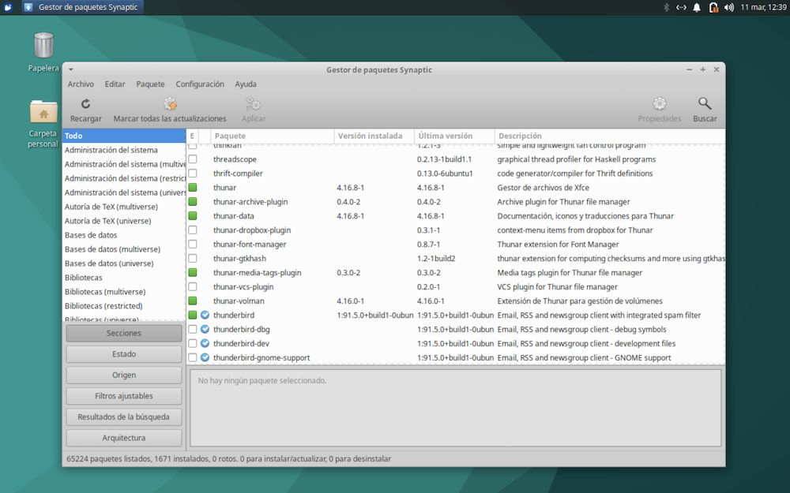
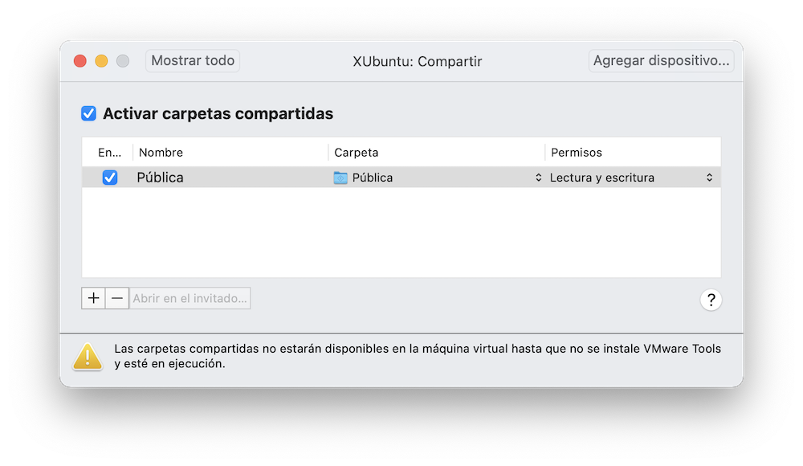

Ajustes¶
Una vez instalado el sistema operativo Linux, vamos a configurarlo a nuestro gusto. Pero ¡cuidado! Es posible que, al hacer cambios en la máquina virtual, la dejemos “patas arriba”. Por esto conviene hacer previamente una copia de seguridad del disco duro virtual, algo que se conoce como un snapshot.
Snapshots¶
Un snapshot es una “foto” de la máquina virtual que permite recuperar su estado más adelante, descartando los cambios que se hayan producido en el tiempo transcurrido. Resulta útil, por ejemplo, cuando vayamos a efectuar un cambio en el software de cuyas consecuencias no estamos seguros.
Un snapshot guarda el estado completo de la máquina virtual en el momento de crearlo:
- Memoria RAM
- Configuración de la máquina virtual
- Discos virtuales
Para mostrar la lista de snapshots, pulsar en el menú de VMware Máquina Virtual > Snapshots. Veremos todos los estados de la máquina que hemos ido guardando, y el estado actual:
Para tomar un nuevo snapshot, seleccionar el estado actual, y en el menú emergente que se muestra tras pulsar con el botón secundario del ratón, pulsar sobre Realizar Snapshot.
Para recuperar el estado anterior de la máquina, seleccionar el Snapshot deseado y pulsar en Restablecer, en el menú emergente. Se nos dará la opción de guardar el estado actual de la máquina antes de restablecerla, creando un nuevo Snapshot. Esto permite deshacer la operación.
Los Snapshot se pueden eliminar siguiendo estos mismos procedimientos.
Podemos configurar la máquina para que se hagan snapshots automáticos cada cierto tiempo. En la esquina superior derecha de la ventana de snapshots tenemos un icono de configuración de la función Autoprotect.
Cuando AutoProtect toma un nuevo snapshot, elimina el snapshot más antiguo para mantener el número máximo permitido que se haya establecido. Podemos evitar la eliminación de un snapshot de la siguiente forma:
- en la ventana Snapshots, pase el cursor por encima del snapshot AutoProtect que desea conservar y haga clic en el botón de información (i).
- haga clic en
[Guardar snapshot].
Instalar nuevo software¶
Ubuntu cuenta con un enorme repositorio de software al que podemos acudir para descargar e instalar paquetes de software. Para esta labor contamos con cuatro posibilidades.
Opción 1: instalar paquetes desde el terminal de comandos¶
Ya hemos visto la forma más técnica, abrir una sesión de terminal de comandos e introducir el comando apt-get con permisos de administrador. Por ejemplo, para instalar el reproductor de vídeo VLC, escribimos:
$ sudo apt-get install vlc
Una vez completado el comando, ya tendremos VLC en el menú de aplicaciones.
Opción 2: synaptic¶
Obviamente, el trabajo con comandos puede resultar algo abrumador para usuarios noveles. Una alternativa más cómoda es el programa Synaptic, que encontraremos en el menú de aplicaciones, apartado configuración > gestor de paquetes Synaptic.
Al ejecutarlo, se muestra un navegador de paquetes. Los marcados son los que ya tenemos instalados:

Pulsando en el menú Ayuda > Leyenda de iconos, obtenemos el significado de cada marca:
Pulsando en el botón Buscar podemos filtrar los paquetes por nombre. Pulsando sobre un paquete, se muestra información del mismo. Pulsando sobre la casilla que hay a la izquierda de cada paquete, lo marcamos para instalar o desinstalar. Algunos paquetes dependen de la presencia de otros, por lo que se nos preguntará si queremos instalar también las dependencias. Finalmente, pulsando en el botón Aplicar, se ejecutan las operaciones de instalación marcadas.
Opción 3: gestor de software¶
La tercera forma de instalar software es mediante un programa llamado Software, que no he conseguido encontrar en los apartados del menú de aplicaciones de Xubuntu, salvo que acudamos a Todas las aplicaciones.
Podemos navegar por una estructura de categorías, o hacer búsquedas por nombre. Una vez seleccionado un paquete, pulsamos sobre el mismo para obtener información y la posibilidad de instalarlo o desinstalarlo.
Opción 4: instalar a partir de descargas¶
Programas como Synaptic y Gestor de software nos dan acceso al repositorio de Ubuntu, y resuelven automáticamente las dependencias, descargando el software complementario que pudiera ser necesario para el buen funcionamiento del paquete a instalar.
Pero si queremos obtener un programa cuya versión en el repositorio de Ubuntu no es la más reciente, o que no está incluido en dicho repositorio, tenemos que acudir a la página web del programa en cuestión. Suele haber diferentes opciones de descarga:
- un programa instalador que resuelva de forma automática todo el proceso
- un archivo comprimido del que podemos extraer su contenido y copiarlo al disco duro. Pero esto no resuelve la gestión de dependencias
- un archivo en formato
.debcuya instalación permite resolver esas dependencias de forma automatizada.
Nota
Synaptic es un programa presente en sistemas derivados de Debian, como es el caso de Ubuntu. El “Gestor de software”, por el contrario, suele ser un programa propio de cada distribución.
Otras distribuciones como Fedora u Open Suse tienen sus propios mecanismos de instalación de programas, y el formato de los paquetes, en lugar de .deb, suele ser .rpm (abreviatura de RedHat package manager).
Veamos un ejemplo de descarga manual. Vamos a acudir a la página del editor de textos Visual Studio Code para obtenerlo en forma de archivo con extensión .deb.
Seguidamente, en la carpeta de /descargas hacemos doble clic sobre el archivo descargado. Se abre el Gestor de paquetes:
Completamos la operación pulsando en el botón [Instalar]. Si se trata de un paquete ya instalado, el botón que se muestra es [Desinstalar].
VMWare Tools¶
El sistema operativo Linux no es consciente de estar ejecutándose en una máquina virtual, por lo que algunas opciones proporcionadas por VMware pueden no funcionar. Para solucionar esto, tenemos que instalar en la máquina virtual un programa llamado “VMware Tools”, que nos proporciona funciones tales como:
- Rendimiento de gráficos considerablemente más rápido
- Carpetas compartidas entre el host y el guest
- Copiar y pegar entre la máquina virtual y el escritorio del host
- Mejora del rendimiento del ratón
- Sincronización del reloj de la máquina virtual con el reloj del escritorio del host o del cliente
En algunos sistemas Linux se utiliza un software llamado Open-VM-Tools en lugar del original proporcionado por VMware. Lo podemos encontrar en el repositorio de programas de la distribución. Abrimos Synaptic, y buscamos el paquete Open-VM-Tools. Seguramente, ya viene instalado de serie, por lo que no hay que hacer nada.
Si Open-VM-Tools no está instalado, seguramente habrá características que no estén funcionando correctamente, como copiar y pegar de una máquina a otra, o compartir carpetas. Tenenemos que instalarlo y reiniciar la máquina virtual.
Si queremos hacer uso del programa original suministrado por VMware, el primer paso sería desinstalar Open-VM-Tools. Seguidamente hacemos lo siguiente:
- apagamos la máquina virtual
- entramos en su configuración, y en el apartado DVD seleccionamos “detección automática”
- reiniciamos la máquina virtual. En el menú de VMWare seleccionamos la opción Máquina Virtual > Instalar VMWare Tools.
Esto inserta un DVD virtual que contiene el programa de instalación. Tenemos que ejecutarlo con privilegios de administrador de nuestra máquina virtual. Consultar el manual de VMware para más detalles.
Carpetas compartidas¶
Una vez comprobado que tenemos VMware Tools, podemos establecer determinadas carpetas a compartir entre ambas máquinas, la física y la virtual. Hay que que acudir a la configuración de la máquina virtual y seleccionar el apartado Compartir:

En este ejemplo estoy compartiendo una carpeta llamada Pública. Podemos añadir o quitar carpetas de la lista pulsando los botones + o -. Podemos ponerlas como de solo lectura (para la máquina guest) o bien, de lectura y escritura.
Para acceder desde la máquina línux, el punto de montaje suele ser el directorio /mnt/hgfs. Véase https://kb.vmware.com/s/article/60262 para más información.
La versión Open-VM-Tools no monta automáticamente las carpetas compartidas, y tenemos que hacerlo a mano cada vez que iniciamos la máquina virtual Linux. Esto resulta más seguro, ya que limita la exposición de nuestra máquina host, pero puede ser un incordio. Para lograr automatizar el montaje de una carpeta, vamos a modificar el archivo de configuración de puntos de montaje, /etc/fstab.
Puntos de montaje
Ya hemos visto que todos los discos conectados se asocian a una carpeta dentro de la estructura general de directorios. El archivo /etc/fstab contiene la lista de puntos de montaje. Cada entrada de la lista representa un disco.
Vamos a considerar cada carpeta compartida de la máquina Host como un disco externo, visible a través de una carpeta de la máquina virtual.
¡Cuidado!
Modificar la configuración del sistema a mano tiene sus riesgos. En este caso, si cambiamos los puntos de montaje de los discos, puede que la máquina virtual deje de funcionar por no ser capaz de acceder a ningún disco.
Puede ser una buena idea hacer previamente un snapshot, como se explicaba al inicio de este capítulo.
Abrimos el terminal de comandos e iniciamos el editor de textos con privilegios de administrador activados mediante el comando:
$ sudo mousepad /etc/fstab
Véase que el editor de Xfce se llama mousepad, y le pasamos como argumento el fichero a modificar.
Añadimos la siguiente línea al final del texto del archivo:
vmhgfs-fuse /mnt/compartida fuse defaults,allow_other 0 0
siendo mnt/compartida el punto de montaje escogido.
Con esto estoy creando una nueva carpeta /mnt/compartida. Típicamente, el directorio /mnt se usa para montar dispositivos externos.
Para que todo esto funcione, hay que reiniciar la máquina. Tendremos acceso a esa carpeta y las que cuelgan de ella. Podemos comprobarlo abriendo el explorador de archivos, y pulsando en la barra lateral en el enlace Sistema de archivos, para acceder a la carpeta raíz del sistema. Pulsamos sobre el directorio mnt y navegamos hasta encontrar la carpeta compartida.
Para facilitar el día a día, podemos crear un enlace en la barra izquierda del explorador. Para ello, pulsar sobre la carpeta en cuestión con el botón secundario del ratón y pulsar sobre la opción enviar a > panel lateral (crear acceso).
Nota importante
Compartir carpetas con la máquina física no está exento de riesgos. Los cambios que hagamos en una máquina se reflejarán en la otra, pero puede haber interferencias. Por ejemplo, la papelera de reciclaje solo funciona en la máquina física cuando se trata de carpetas compartidas. Si intentamos eliminar un archivo en la máquina virtual, el borrado será definitivo. Este tipo de operaciones conviene hacerlas desde la máquina física.
El teclado¶
El uso de teclas de control, como Ctrl, Alt, Cmd, etcétera puede colisionar entre ambas máquinas. Por ejemplo, la tecla Cmd de un mac se utiliza en combinación con otras teclas para gobernar la máquina virtual. Tal es el caso de la combinación Ctrl+Cmd+F, que activa la pantalla completa para la máquina virtual.
Sin embargo, Xubuntu utiliza la tecla Cmd para desplegar el menú de aplicaciones. A veces, una pulsación de teclas puede tener efectos inesperados.
Ya hemos visto que podemos revisar la configuración de teclas de VMware, en el menú Preferencias > Teclado y ratón. Cambiaremos las que estén produciendo interferencias.
Otra posibilidad es modificar la configuración de Xubuntu acudiendo al menú de aplicaciones, Preferencias > Teclado.
Seleccionar fondo de escritorio¶
El fondo de escritorio de Xubuntu se puede cambiar desde el menú de aplicaciones, apartado configuración > escritorio.
Paneles¶
La barra de iconos que se muestra en el borde del escritorio se llama panel. Xubuntu la muestra por defecto en el borde superior de la pantalla, aunque podemos moverla de sitio, e incluso crear nuevos paneles.
Para configurar los paneles, vamos a configuración > panel:
Los iconos + y - permiten añadir nuevos paneles al escritorio o suprimir el seleccionado en la lista desplegable.
Seleccionando un panel en esa lista podemos configurarlo cambiándolo de sitio, de tamaño o hacer que se muestre solo cuando acercamos el ratón.
Vamos a crear un segundo panel que pondremos en el borde inferior con las siguientes características:
- horizontal
- lo arrastramos enganchándolo con el ratón por la esquina del panel. Una vez en su sitio, marcamos la casilla bloquear
- ajustamos el tamaño de la fila de iconos, para que no sean demasiado pequeños
- marcamos aumentar la longitud automáticamente
Para añadir aplicaciones al panel, acudimos al menú de aplicaciones e introducimos el nombre de una de ellas. Entre la lista de aplicaciones encontradas, seleccionamos la que queremos añadir al panel, pulsando con el botón secundario del ratón. En el menú emergente, pulsamos sobre la opción “añadir al panel”. Se mostrará una lista de paneles para escoger uno.

Para añadir gadgets, acudimos a la aplicación configuración > panel, que ya hemos visto, y seleccionamos la pestaña “elementos”.
Bloquear equipo¶
Por motivo de inactividad, tanto la máquina física como la virtual están configuradas para bloquear la sesión o dejar la máquina en suspenso pasado un tiempo. Podemos configurar todo esto desde el menú de aplicaciones, configuración > administrador de energía.
También podemos evitar que se active el salvapantallas (y que nos pida la contraseña para desbloquear) desde configuración > salvapantallas.
Iconos del escritorio¶
Mediante el menú de aplicaciones, apartado Configuración > Escritorio > Iconos podemos configurar los iconos que deben mostrarse de forma automática en el escritorio: carpeta personal, papelera, etc.
Editar menú de aplicaciones¶
En el menú de aplicaciones, apartado Configuración, tenemos una aplicación llamada Editor de menú. Permite administrar las entradas de cada categoría.
También sirve para averiguar cual es el comando que se ejecuta para iniciar cada aplicación (y modificarlo si es nuestro deseo).
Nótese que no todas las aplicaciones instaladas están englobadas en un apartado del menú. A las que no lo están se tiene acceso pulsando en la categoría Todas las aplicaciones.
Apariencia del escritorio¶
Los colores por defecto, los iconos, el uso de fondo claro u oscuro, el tipo de letra que aparece en los botones, los menús o la barra de título de las ventanas, y toda el aspecto en general, se puede configurar desde la aplicación Configuración > Apariencia.
El disco duro virtual¶
Cada máquina virtual VMware se materializa en un único archivo en la máquina física, con extensión .vmwarevm, que “empaqueta” todo tipo de contenidos. Con VMware Fusion podemos examinar los archivos individuales empaquetados pulsando sobre el fichero mientras mantenemos la tecla Ctrl. Esto despliega un menú emergente. Seleccionamos Mostrar contenido del paquete.